กลืนตัวยาพร้อมน้ำ และก่อนกินควรดูฉลากก่อนกิน ดูขนาดยา (เช่น 500 mg) และคำแนะนำการใช้ก่อนทุกครั้ง ขนาดผู้ใหญ่ (ยา 500 mg):กินครั้งละ 1-2 เม็ด (500-1000 mg) เว้นระยะห่าง 4-6 ชั่วโมง. ไม่เกิน 8 เม็ด (4000 mg) ต่อวัน ขนาดเด็ก: คำนวณตามน้ำหนักตัว (10-15 mg/น้ำหนัก 1 kg) หรือดูตามฉลากยา
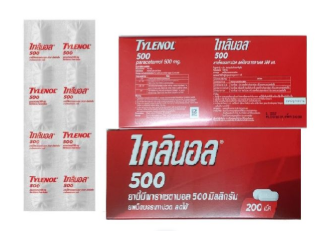
ยาแก้ปวดท้อง
กินตัวยาพร้อมน้ำ ก่อนกินควรอ่านฉลากก่อน Mefenamic Acid: เริ่มต้น 500 mg แล้วตามด้วย 250 mg ทุก 6 ชม. (กินช่วงมีประจำเดือน 2-3 วันแรก) Ibuprofen: 200-400 mg ทุก 6-8 ชม. หลังอาหาร Paracetamol: 1-2 เม็ด (500 mg) ทุก 4-6 ชม. (ไม่เกิน 8 เม็ด/วัน) หากอาการหายแล้วสามารถหยุดกินได้
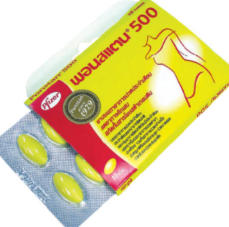
ยาแก้ไอ
กินทุก 6-8 ชั่วโมง กินหลังอาหารหรือก่อนนอนตามฉลากของตัวยาที่กิน ยาเม็ดต้องกินพร้อมน้ำเปล่าเยอะๆ ยาน้ำต้องใช้ถ้วยตวงที่มากับยาเท่านั้น ห้ามใช้ช้อนทั่วไป ยาละลายน้ำให้ผสมตามปริมาณที่กำหนดข้างกล่องหรือที่เภสัชแนะนำมาให้ถูกต้อง แล้วดื่มทันที
ยาแก้ท้องเสีย
ยาหยุดถ่าย ให้กิน 2 เม็ดแรก เมื่อมีอาการถ่ายเหลว และกินซ้ำอีกครั้งละ 1 เม็ด ทุกครั้งที่ถ่ายเหลว แต่ไม่ควรเกิน 8 เม็ดต่อวัน ยาดูดซับสารพิษ หรือ ยาคาร์บอน ให้กิน 2-4 เม็ด หากมีอาการ ทุก 4-6 ชั่วโมง และให้เว้นระยะการกินยาห่างจากยาอื่น 2 ชั่วโมง กินตามที่เภสัชแนะนำ หรือตามฉลาก
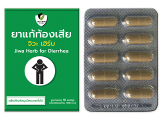
เกลือแร่
เทผงเกลือแร่ 1 ซอง ลงในน้ำต้มสุกที่เย็นแล้ว ปริมาตรตามที่ฉลากกำหนด (ประมาณ 1 แก้ว) ห้ามผสม: ห้ามผสมกับนม น้ำผลไม้ หรือน้ำอัดลม จิบทีละน้อย: จิบช้าๆ แทนน้ำเปล่าเมื่อเริ่มมีอาการท้องเสียหรืออาเจียน ไม่ควรดื่มรวดเดียวหมด รอหลังอาเจียน: หากอาเจียน ไม่ควรดื่มต่อทันที ควรรอประมาณ 10 นาที แล้วค่อยเริ่มจิบใหม่
น้ำเกลือ
ใช้กับสำลี/ผ้าก๊อซ หรือกระบอกฉีด (สำหรับจมูก) โดยระวังไม่ให้ปากขวดสัมผัสแผล และควรใช้ชนิดปราศจากเชื้อ (0.9%) เมื่อจำเป็นต้องใช้กับร่างกาย ล้างแผล เทน้ำเกลือให้ไหลผ่านแผล (ห้ามให้ปากขวดโดนแผล) ล้างสิ่งสกปรกออก แล้วใช้สำลี/ผ้าก๊อซซับรอบๆ ให้แห้ง. ล้างตา เอียงหน้าเล็กน้อย เทน้ำเกลือใส่ตาเบาๆ หรือใช้ที่ล้างตาที่มีน้ำเกลือ กลั้วปาก อมน้ำเกลือกลั้วคอและปากนาน 2 นาที วันละ 3 ครั้ง
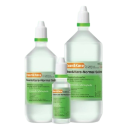
เบตาดีน
ล้างมือให้สะอาด: ก่อนและหลังทำแผล ทำความสะอาดแผล: ล้างแผลด้วยน้ำสะอาดเบาๆ และซับให้แห้ง (ไม่แนะนำให้ใช้สำลีเช็ดรอบแผลเพราะอาจติดแผลได้) ทายา: ทาเบตาดีนบางๆ บริเวณแผล (อาจใช้สำลีชุบแล้วทา) หรือใช้ผ้าก๊อซชุบยาปิดแผล ปิดแผล: ปิดด้วยผ้าก๊อซปราศจากเชื้อ หรือพลาสเตอร์ (ถ้าใช้พลาสเตอร์ ให้รอเบตาดีนแห้งก่อน) ความถี่: ทำวันละ 1-2 ครั้ง หรือตามคำแนะนำบนฉลาก
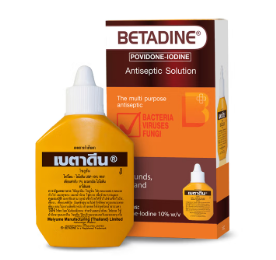
ยาแก้หอบหืด
เขย่าหลอดพ่นยา 4-5 ครั้ง ตั้งตรงหายใจออกทางปาก อ้าปาก, ใส่ปากเป่าให้ห่างจากปากประมาณ 2 นิ้ว, กดพ่นยา 1 ครั้ง พร้อมกับหายใจเข้าช้าๆ ลึกๆ กลั้นหายใจ 10 วินาที (นับช้าๆ) เพื่อให้ยาเข้าปอด หายใจออกช้าๆ ทางปากหรือจมูก ถ้าใช้ซ้ำต้องรอ 1-2 นาที แล้วทำซ้ำขั้นตอน หลังใช้ยาที่มีสเตียรอยด์ (ยาควบคุม) ต้องบ้วนปากและกลั้วคอด้วยน้ำเปล่า
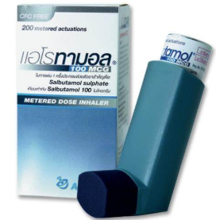
ยาหม่อง
แตะยาหม่อง ในปริมาณพอเหมาะ (เริ่มต้นจากน้อยๆ) ทาและนวดเบาๆ บริเวณที่ปวดเมื่อย กล้ามเนื้อตึง เคล็ดขัดยอก หรือโดนแมลงกัดต่อย. นวดเป็นวงกลม จนยาซึมเข้าผิว (บางชนิดอาจต้องใช้เวลาซึมกว่า). สูดดม (ถ้ามีกลิ่นหอม): แตะแต้มเล็กน้อยที่ขมับหรือใต้จมูก (ระวังเข้าตา)
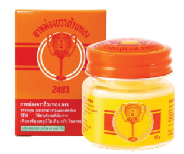
ยาคุม
เริ่มกินเม็ดแรกภายใน 5 วันแรกของประจำเดือน กินวันละ 1 เม็ด เวลาเดิมทุกวัน เพื่อประสิทธิภาพสูงสุด และกินต่อเนื่องตามลำดับจนหมดแผง (21 หรือ 28 เม็ด) โดยแบบ 21 เม็ดหยุด 7 วันเริ่มแผงใหม่ ส่วนแบบ 28 เม็ดกินต่อทันที (มีเม็ดแป้ง 7 เม็ด) หากเริ่มกินนอกช่วงประจำเดือนต้องใช้วิธีคุมกำเนิดอื่นร่วม 7 วัน
ยาแก้อาการคัน
ยาสเตียรอยด์: ทาบางๆ วันละ 1-2 ครั้งบริเวณที่คัน (หลีกเลี่ยงแผลเปิด) ห้ามใช้ต่อเนื่องนานเกิน 3 สัปดาห์โดยไม่ปรึกษาแพทย์ เพราะอาจผิวบาง คาลาไมน์: เขย่าขวดก่อนใช้ ทาบางๆ 3-4 ครั้ง/วัน ยาต้านเชื้อรา (เช่น คลอไตรมาโซล): ทาวันละ 2-3 ครั้งต่อเนื่อง 1-2 สัปดาห์ (สำหรับเชื้อรา) วิธีทา: ทำความสะอาดผิว เช็ดให้แห้งก่อนทายา
ยาลดกรด
กิน หลังอาหาร 1 ชั่วโมง หรือเมื่อมีอาการ (เขย่าขวดถ้าเป็นยาน้ำ เคี้ยวเม็ดถ้าเป็นยาเม็ด), ส่วน ยา PPIs (เช่น Omeprazole) กลุ่มยับยั้งการหลั่งกรด ควร กินก่อนอาหารเช้า 30-60 นาที เพื่อให้ยาออกฤทธิ์ดีที่สุด และ ห้ามบด แคปซูล ยาแต่ละชนิดมีวิธีใช้ต่างกัน ควรดูฉลากยาหรือปรึกษาเภสัชกรเสมอ
ยานอนหลับ
แบ่งเป็น 2 ประเภท ยานอนหลับที่ควรรับประทานก่อนนอนประมาณ 15 - 30 นาที เพื่อให้ยาออกฤทธิ์ขณะหลับพอดี และยาอื่นๆ ที่ไม่ใช่ยานอนหลับ ควรรับประทานอย่างน้อย 3-4 ชั่วโมงหลังมื้อเย็น
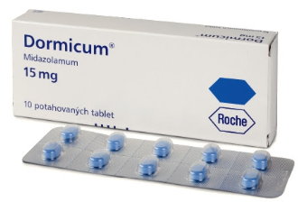
ยาสมุนไพร
หากไม่เคยทานยาสมุนไพรชนิดใดเลย ให้ลองเริ่มจากปริมาณน้อยๆ เพื่อดูอาการแพ้ แบบผง ให้เทลงน้ำอุ่นหรือร้อนแล้วผสมก่อนดื่ม แบบเม็ด กินพร้อมน้ำปริมาณมาก อย่าใช้แทนยาแผนปัจจุบัน ยาสมุนไพรอาจไม่มีประสิทธิภาพเท่าที่ควรสำหรับโรคเรื้อรัง เช่น เบาหวาน ความดัน และอาจทำให้อาการแย่ลงได้
ยาปฏิชีวนะ
เคาะขวด: เคาะขวดเบาๆ เพื่อให้ผงยาที่อาจจับตัวเป็นก้อนคลายตัว. เติมน้ำส่วนแรก: เติมน้ำสะอาด (เย็น) ประมาณครึ่งหนึ่งของขีดที่กำหนด หรือพอท่วมผงยา. เขย่าครั้งที่ 1: เขย่าขวดให้ผงยาละลายทั่ว ไม่มีก้อนแข็ง. เติมน้ำส่วนที่เหลือ: เติมน้ำสะอาดให้ครบตามขีดที่กำหนด. เขย่าครั้งที่ 2: เขย่าให้เข้ากันอีกครั้งแล้วจึงนำมาฉีด
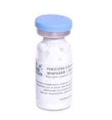
ครีมแก้ปวด
เตรียมผิว: ล้างบริเวณที่ปวดให้สะอาดและเช็ดให้แห้งสนิท ทาครีม: บีบครีมออกมาปริมาณเล็กน้อย (เช่น 1-2 กรัม หรือประมาณครึ่งข้อนิ้ว) นวด บริเวณที่ปวด ทาวันละ 2-4 ครั้ง หรือตามคำแนะนำบนฉลาก ล้างมือหลังทาครีมทุกครั้งต้องล้างมือให้สะอาด
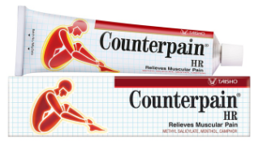
ยาแก้เจ็บคอ
อมไว้จนกว่ายาจะละลายเองกินยาให้ถูกเวลา (หลังอาหารสำหรับยาแก้อักเสบ, ก่อนอาหารสำหรับยาฆ่าเชื้อบางชนิด) ทานให้ครบตามที่แพทย์สั่ง แม้หายแล้วเพื่อป้องกันดื้อยา และกินยาอมสมุนไพร/กลั้วคอด้วยน้ำเกลือเพื่อช่วยบรรเทาอาการควบคู่กันไป
เจลว่านหางจรเข้
บำรุงผิวหน้า: หลังล้างหน้าให้สะอาด ซับหน้าพอหมาด ทาเจลบางๆ ให้ทั่วใบหน้า มาส์กหน้า: ทาหนาๆ ทิ้งไว้ 15-20 นาที แล้วล้างออก หลังออกแดด: ทาเจลเย็นๆ ที่แช่ตู้เย็นไว้เพื่อลดอาการแสบแดงและร้อนผิว ลดอาการระคายเคือง: ทาบางๆ บริเวณที่มีสิวอักเสบ หรือหลังทำเลเซอร์ เพื่อลดรอยแดงและช่วยฟื้นฟู
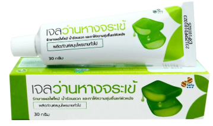
น้ำตาเทียม
ใช้นิ้วเปิดดวงตาให้กว้าง จากนั้นจึงหยอดน้ำตาเทียมลงดวงตาที่ตาแห้งหรือระคายเคืองหยอดรบอละ1-2รอบ รอบละ1-2 หยด หากหยดรอบแรกแล้วยังไม่หายให้หยอดรอบ2ต่อ หยอดแล้วให้รอสักพักแล้วค่อยกระพริบตาเอาน้ำออกบางส่วน
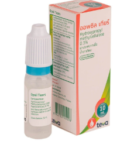
เข็มอินซูลิน
ใช้มือข้างถนัดกำปากกา โดยนิ้วหัวแม่มือแตะปุ่มกด ใช้นิ้วโป้งและนิ้วชี้หยิบผิวหนังขึ้นเล็กน้อย แทงเข็มตั้งฉาก (90 องศา) หรือ 45 องศา (ถ้าผอมมาก) ให้มิดเข็ม กดปุ่มฉีดอย่างช้าๆ และสม่ำเสมอจนตัวเลขกลับมาที่ 0 ค้างเข็มไว้ที่เดิมนับ 1-10 (10 วินาที) เพื่อให้ยาซึมเข้าสู่ใต้ผิวหนังทั้งหมด ดึงเข็มออกในแนวเดิม ใช้สำลีแห้งกดที่รอยฉีดเบาๆ ห้ามคลึง ถอดฝาเข็มออก (อย่าใส่ทิ้งไว้ที่ปากกา) แล้วทิ้งเข็มที่ใช้แล้วลงในภาชนะทิ้งเข็มเฉพาะ
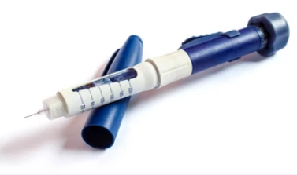